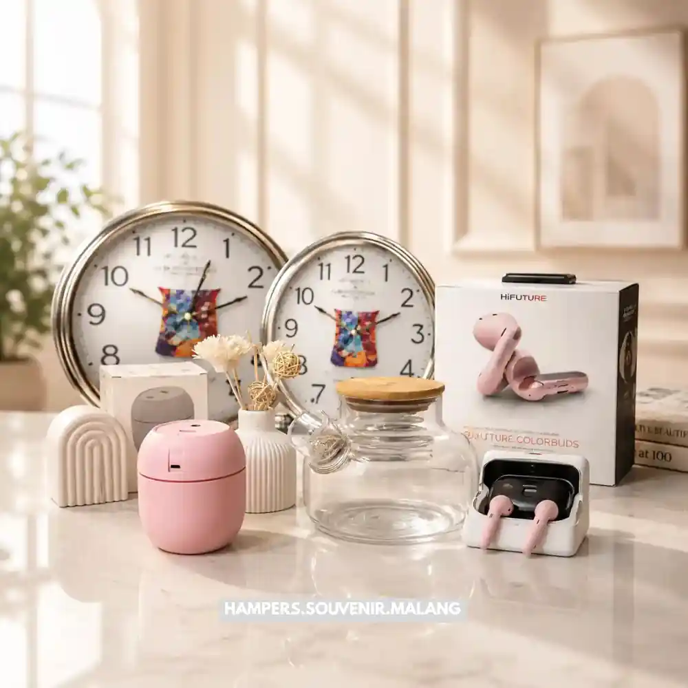

Hampers kantor Malang adalah paket hadiah yang disusun khusus untuk kebutuhan korporat, mulai dari apresiasi karyawan hingga hadiah relasi bisnis, dengan berbagai pilihan isi dan kemasan sesuai anggaran perusahaan.
- Hampers kantor dipakai untuk momen apresiasi, hari raya, ulang tahun perusahaan, dan penyambutan klien.
- Isi hampers umumnya berupa makanan, minuman, alat tulis, atau kombinasi produk lokal khas Malang.
- Harga bervariasi tergantung isi, kemasan, dan jumlah pesanan.
- Pemesanan dalam jumlah besar biasanya bisa dikustomisasi dengan logo perusahaan.
- Memilih vendor lokal di Malang memudahkan koordinasi pengiriman dan revisi desain.
Apa Itu Hampers Kantor dan Mengapa Penting bagi Bisnis?
Hampers kantor adalah paket hadiah yang disiapkan perusahaan untuk diberikan kepada karyawan, klien, atau mitra bisnis sebagai bentuk apresiasi atau penguatan hubungan kerja.
Pemberian hampers kantor umumnya dilakukan pada momen tertentu seperti akhir tahun, hari raya keagamaan, ulang tahun perusahaan, atau sebagai gestur terima kasih setelah kerja sama selesai. Selain nilai materialnya, hampers berfungsi sebagai simbol perhatian perusahaan terhadap orang-orang yang berperan dalam kelangsungan bisnis.
Di lingkungan kerja, pemberian hampers juga dapat membantu menjaga hubungan jangka panjang dengan klien dan mitra, sekaligus meningkatkan rasa dihargai pada karyawan. Praktik ini umum dilakukan berbagai jenis usaha, dari perusahaan skala kecil hingga korporasi besar.

Bagaimana Cara Memilih Hampers Kantor yang Tepat di Malang?
Memilih hampers kantor yang tepat berarti menyesuaikan isi, kemasan, dan anggaran dengan tujuan pemberian serta profil penerima. Beberapa hal yang perlu dipertimbangkan saat memilih hampers kantor di Malang antara lain:
- Tujuan pemberian: hampers untuk klien biasanya lebih formal dibanding hampers untuk karyawan internal.
- Profil penerima: pertimbangkan preferensi umum, misalnya apakah penerima menyukai produk makanan, kebutuhan kerja, atau produk kesehatan.
- Anggaran perusahaan: tentukan kisaran harga per unit sebelum memilih isi hampers agar tidak melebihi budget yang direncanakan.
- Waktu pengiriman: pastikan vendor dapat memenuhi tenggat waktu, terutama pada musim ramai seperti menjelang hari raya.
- Kemungkinan kustomisasi: tanyakan apakah vendor menyediakan opsi logo perusahaan atau kartu ucapan personal.
Vendor hampers di Malang umumnya menawarkan beberapa paket standar yang dapat disesuaikan isinya, sehingga perusahaan tidak perlu menyusun dari nol setiap kali memesan.
Apa Saja Jenis Hampers Kantor yang Umum Tersedia?
Jenis hampers kantor pada umumnya dibedakan berdasarkan isi produk, mulai dari kategori makanan, minuman, hingga kebutuhan kerja sehari-hari. Beberapa kategori hampers kantor yang sering ditemukan:
- Hampers makanan dan camilan: berisi kudapan kering, kue, atau produk khas daerah yang tahan lama.
- Hampers minuman: kombinasi kopi, teh, atau minuman kemasan premium.
- Hampers alat tulis dan kerja: notes, pulpen, tumbler, atau perlengkapan kantor lainnya.
- Hampers kombinasi: gabungan makanan, minuman, dan barang fungsional dalam satu paket.
- Hampers tematik hari raya: disesuaikan dengan momen tertentu seperti Lebaran, Natal, atau tahun baru.
Pemilihan produk lokal khas Malang, seperti keripik atau olahan buah tertentu, sering menjadi nilai tambah karena memberikan kesan personal dan mendukung usaha kecil setempat.
Berapa Kisaran Biaya Hampers Kantor di Malang?
Biaya hampers kantor umumnya ditentukan oleh jenis isi, kualitas kemasan, dan jumlah pesanan, sehingga rentang harganya dapat bervariasi cukup lebar.
Secara umum, harga hampers dapat dikelompokkan menjadi beberapa kisaran: paket ekonomis dengan isi sederhana, paket menengah dengan kombinasi produk lebih variatif, dan paket premium dengan kemasan eksklusif serta produk pilihan. Pemesanan dalam jumlah besar biasanya mendapatkan penyesuaian harga per unit dibanding pembelian satuan, tergantung kebijakan masing-masing vendor.
Perusahaan disarankan meminta penawaran harga secara langsung dari beberapa vendor untuk membandingkan isi dan kualitas sebelum memutuskan, karena struktur harga dapat berbeda antar penyedia.
Apa Saja Kesalahan Umum saat Memesan Hampers Kantor?
Kesalahan umum dalam pemesanan hampers kantor biasanya terkait waktu pemesanan yang terlalu mepet dan kurangnya konfirmasi detail isi sebelum produksi massal. Beberapa kesalahan yang sering terjadi:
- Memesan mendekati momen puncak seperti Lebaran tanpa memperhitungkan antrean produksi vendor.
- Tidak mengecek contoh produk terlebih dahulu sebelum memesan dalam jumlah besar.
- Mengabaikan masa simpan produk, terutama untuk hampers berisi makanan basah atau segar.
- Tidak mengonfirmasi kebutuhan kustomisasi logo atau ucapan sejak awal, sehingga revisi memakan waktu tambahan.
- Kurang mempertimbangkan metode pengiriman untuk penerima di luar kota.
Menghindari kesalahan ini dapat dilakukan dengan berkomunikasi secara detail bersama vendor sejak tahap awal pemesanan.
Tips Praktis Memesan Hampers Kantor di Malang
Beberapa tips berikut dapat membantu proses pemesanan hampers kantor berjalan lebih lancar:
- Rencanakan pemesanan setidaknya beberapa minggu sebelum momen yang dituju.
- Minta sampel atau foto produk sebelum menyetujui pesanan dalam jumlah besar.
- Diskusikan anggaran secara terbuka agar vendor dapat menyusun paket yang sesuai.
- Pertimbangkan produk lokal Malang untuk memberi nilai tambah dan kesan personal.
- Simpan komunikasi tertulis terkait kesepakatan isi, harga, dan jadwal pengiriman.
Kesimpulan
Memilih hampers kantor Malang yang tepat membutuhkan perencanaan matang, mulai dari menentukan tujuan pemberian, memilih jenis isi yang sesuai, hingga mengatur anggaran dan waktu pemesanan. Komunikasi yang jelas dengan vendor sejak awal akan membantu memastikan hampers sampai tepat waktu dan sesuai harapan.
Tanya Jawab Seputar Hampers Kantor Malang
Hampers kantor adalah paket hadiah yang disusun perusahaan untuk karyawan, klien, atau mitra bisnis sebagai bentuk apresiasi pada momen tertentu.
Waktu paling tepat umumnya beberapa minggu sebelum momen yang dituju, agar vendor memiliki waktu cukup untuk produksi dan pengiriman.
Banyak vendor hampers di Malang menawarkan opsi kustomisasi logo perusahaan pada kemasan atau kartu ucapan, tergantung kebijakan masing-masing penyedia.
Anggaran dapat ditentukan berdasarkan jumlah penerima, tujuan pemberian, dan kisaran harga per unit yang sudah ditetapkan perusahaan sejak awal.
Hal ini tergantung jenis makanan; produk kering biasanya lebih tahan lama dan aman dikirim dibanding produk basah atau segar, sehingga perlu dikonfirmasi ke vendor terkait masa simpan.

Butuh Hampers Kantor?
Solusi Hampers & Corporate Gift Kreatif di Malang Raya.
Ditulis oleh Tim Maroon Souvenir
Sahabat mahasiswa dan pelaku bisnis di Malang Raya. Berpengalaman menangani merchandise event kampus, instansi pemerintahan, dan hotel berbintang di Batu.